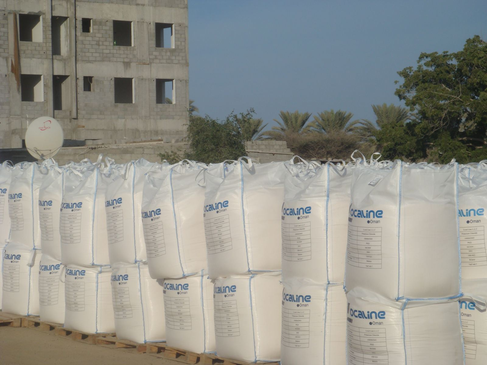
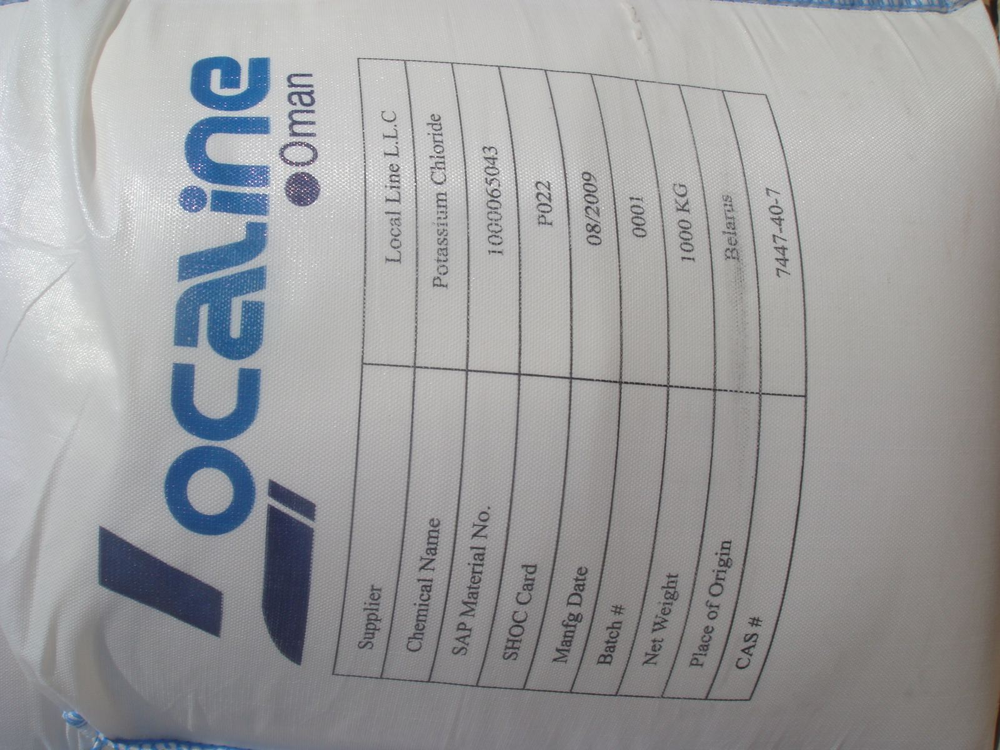
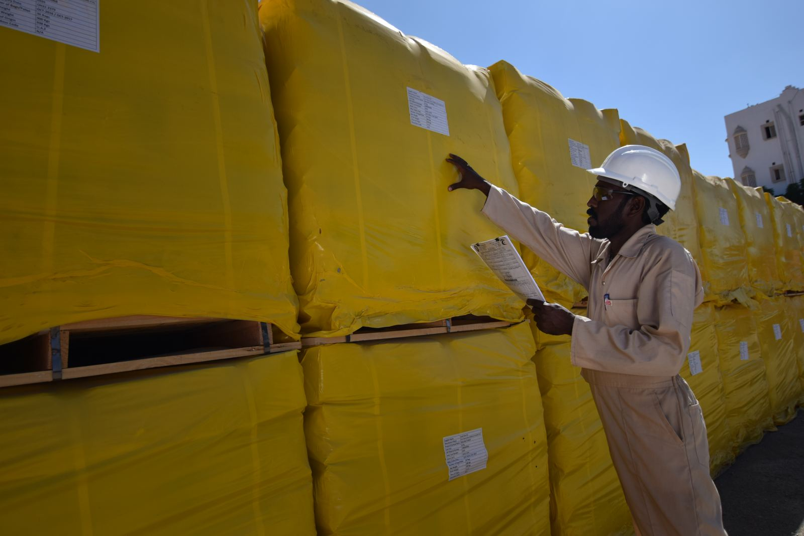
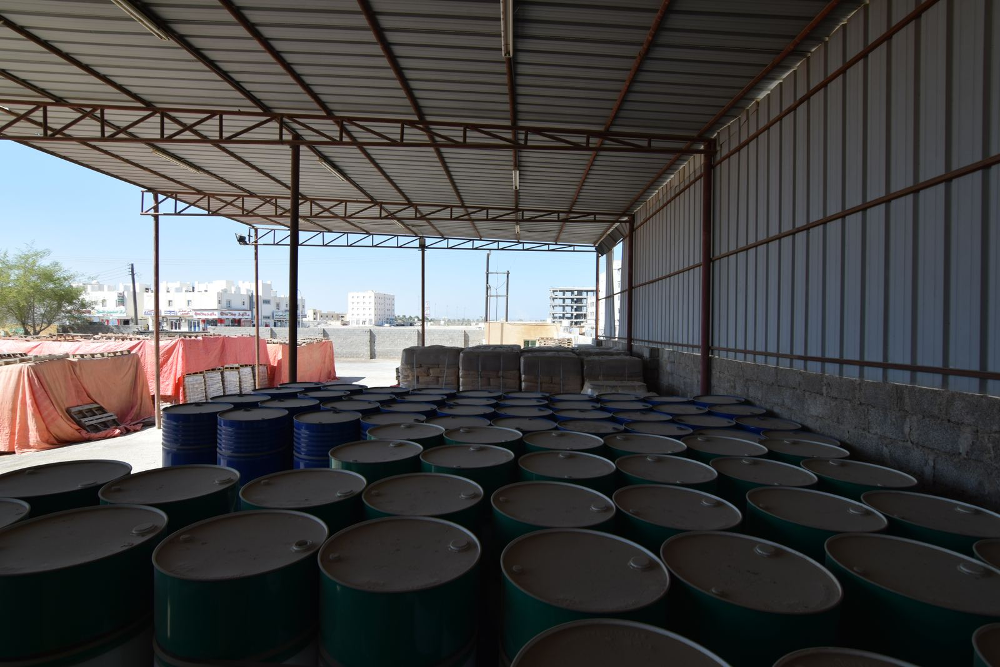
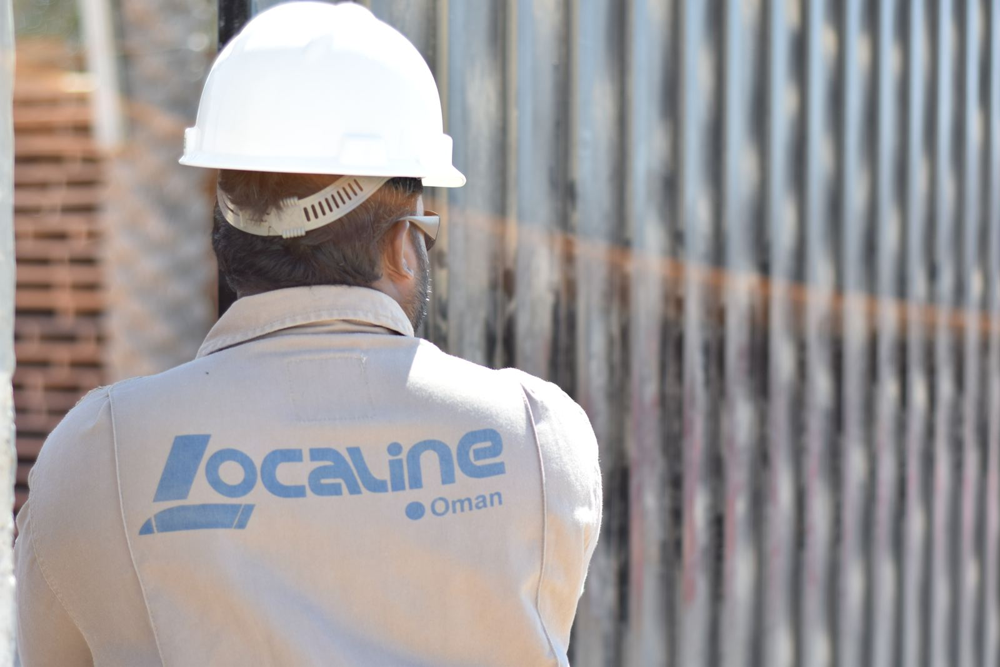
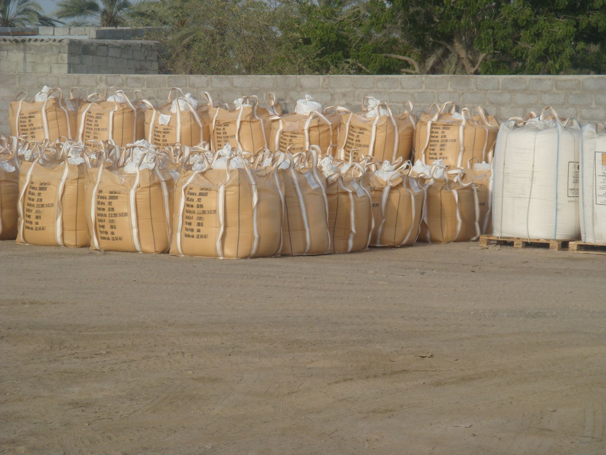

Localine is an Omani SME founded in 2004 and part of United Business Group. It supplies PDO HT Starch and Drilling Starch, alongside drilling salts, polymers, bulk products and specialty chemicals.
Potassium chloride (KCl), calcium chloride, sodium chloride, ammonium chloride and graded salt.
HT Starch and Drilling Starch, polymers (PAC LV, PHPA, xanthan gum, HEC), bulk products (barite, bentonite, calcium carbonate), lubricants, corrosion inhibitors and biocides.
Storage, transport and call-off deliveries to rig sites and operators across Oman.
Localine has held tendered supply contracts with Petroleum Development Oman (PDO) since 2009, including potassium chloride drilling salt, calcium chloride and specialty drilling chemicals – and today supplies HT Starch and Drilling Starch.

Local Line LLC was established in 2004 as a logistics company. In 2009 it was restructured around oil field supply and services, and in March 2009 won a tendered contract to supply potassium chloride drilling salt to PDO. Further PDO contracts followed for specialty drilling chemicals and calcium chloride. In 2013 Localine was awarded a PDO contract to supply normal and high-temperature drilling starch, which led to the Gulf Starch plant in Sohar.
40,000 m² in total across Al-Mabailah (Muscat), Sumail, Rusail and Sohar. Breakdown by site [to confirm]
As listed in our company profile – current list [to confirm]
 Petroleum Development OmanOman Oil Field Supply & Services (OOISS)MB PetroleumAbraj OmanRoyal Desert Services (UAE)Oren Hydrocarbons ME (UAE)MI Middle East (UAE)Nahr Oil Services (Libya)
Petroleum Development OmanOman Oil Field Supply & Services (OOISS)MB PetroleumAbraj OmanRoyal Desert Services (UAE)Oren Hydrocarbons ME (UAE)MI Middle East (UAE)Nahr Oil Services (Libya)A dedicated HSE advisor, trained crews and full PPE at our warehouses and on delivery.
Lab QA at the group’s ISO 17025 laboratory, United Integrated Laboratories (Rumais, Barka).
Zero lost-time incidents and top ratings in PDO warehouse audits, as reported in our company profile. [to confirm]





